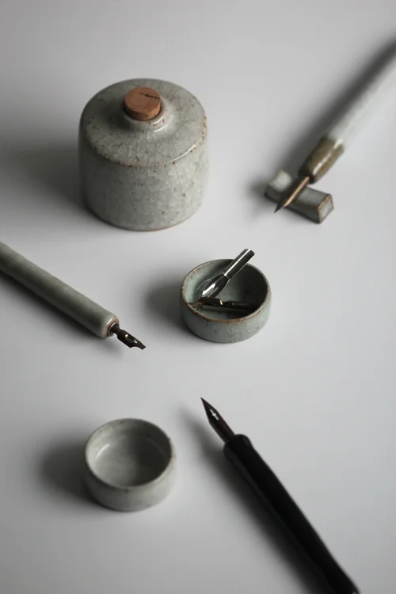

My Book
Here you can find my new book! Click on the image to learn more.

My new book:
By My Hands A Potter's ApprenticeshipMy Works
Look at some of my beautiful, unique creations.
| Tea Set | Mugs Tower | Inking Set |
|---|---|---|

|

|
 |
What's included:
|
You can choose:
|
What's included:
|
Recommended Items:


About Me
I’m a ceramicist, author and videographer, working in London, UK.
I’ve been documenting my work on Instagram for the past 11 years, where I write about the processes involved in my craft and the ideas and discoveries I encounter along the way. I create tableware, one-off decorative and sculptural vessels and the rare commission. My ceramics are sold primarily through my online shop, unless stated otherwise but keep an eye out for exhibitions I’m often part of. Recently, I’ve started creating more in-depth videos on YouTube. These longer format films discuss process, my making philosophies and show how I throw and trim my pottery in much greater detail.
I’m also an author and in 2023 my first book, ‘By My Hands: A Potter’s Apprenticeship’ was published, more information about which you can find by clicking here.
If you've got any further queries please send me a message directly via my contact page.